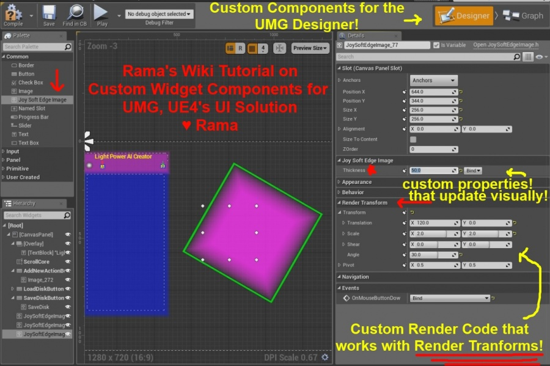

UMG, Custom Widget Components And Render Code, Usable In UMG Designer
Contents
Overview

Original Author: ( )
In this wiki I provide you with the full code that I used to create a custom Designer-positionable and editable UMG component!
This is a UMG widget/component with completely custom render code that works with UMG's render transform system!
Video of Custom UMG Component, Editable within Designer
<youtube> https://www.youtube.com/watch?v=1prIYTfng9g
Custom UMG Component Property: Thickness
In my code I am not only sharing with you how to do custom render code, I am also showing you how to make your own custom properties that will update in the UMG Designer!
As you see in the video, my custom property Thickness, which directly affects the rendering, does update instantly every time I enter new values within the UMG Designer!
Build CS
Make sure you have this in your project's build cs to ensure my code below will compile!
PublicDependencyModuleNames.AddRange(new string[] {
"Core", "CoreUObject", "Engine", "InputCore",
"UMG", "Slate", "SlateCore",
});
C++ Code for You
You are welcome to use my C++ code as a template for your own custom UMG components, just please credit me as the original author/contributor of the code that you use! Mentioning me as "Rama" is sufficient.
Note that there are two new classes!
There is the Slate C++ Core widget, which has the custom render code and the custom property, thickness, for use with the render code.
This Slate widget extends SImage to minimize introduction of duplicate/unnecessary code while also allowing me to inherit any new features that Epic adds to the SImage in the future!
Then there is also a UMG Component which wraps my custom Slate widget!
The core additional code to this UMG component class is my code to enable the Thickness property to trigger dynamic updates of the visual appearance of the custom component while in the Designer! These dynamic updates are accomplished using SynchronizeProperties().
JoySoftEdgeImage.h
/*
JoySoftEdgeImage by Rama
*/
#pragma once
//~~~~~~~~~~~~ UMG ~~~~~~~~~~~~~~~~
#include "Runtime/UMG/Public/UMG.h"
#include "Runtime/UMG/Public/UMGStyle.h"
//~~~~~~~~~~~~~~~~~~~~~~~~~~~~~~~~~
//Custom Slate Element
#include "SSoftEdgeImage.h"
#include "JoySoftEdgeImage.generated.h"
UCLASS()
class UJoySoftEdgeImage : public UWidget
{
GENERATED_UCLASS_BODY()
//Custom Slate Element
protected:
TSharedPtr<SSoftEdgeImage> MyImage;
//~~~~~~~~~~
//Thickness
// Rama's custom UMG Widget property!
//~~~~~~~~~~
public:
/** Thickness */
UPROPERTY(EditAnywhere, BlueprintReadWrite, Category="Joy Soft Edge Image")
float Thickness;
//Delegate verison if you want it!
// -Rama
//PROPERTY_BINDING_IMPLEMENTATION(float, Thickness);
/** Update thickness of Soft Edge Image! Yay! */
UFUNCTION(BlueprintCallable, Category="Joy Soft Edge Image")
void SetThickness(float InThickness);
//~~~ Rest is copied from UMG Image.h ~~~
public:
/** Image to draw */
UPROPERTY(EditDefaultsOnly, BlueprintReadOnly, Category=Appearance)
FSlateBrush Brush;
/** A bindable delegate for the Image. */
UPROPERTY()
FGetSlateBrush BrushDelegate;
/** Color and opacity */
UPROPERTY(EditDefaultsOnly, BlueprintReadOnly, Category=Appearance)
FLinearColor ColorAndOpacity;
/** A bindable delegate for the ColorAndOpacity. */
UPROPERTY()
FGetLinearColor ColorAndOpacityDelegate;
public:
UPROPERTY(EditDefaultsOnly, Category=Events)
FOnPointerEvent OnMouseButtonDownEvent;
public:
/** */
UFUNCTION(BlueprintCallable, Category="Appearance")
void SetColorAndOpacity(FLinearColor InColorAndOpacity);
/** */
UFUNCTION(BlueprintCallable, Category="Appearance")
void SetOpacity(float InOpacity);
/** */
UFUNCTION(BlueprintCallable, Category="Appearance")
void SetBrushFromAsset(USlateBrushAsset* Asset);
/** */
UFUNCTION(BlueprintCallable, Category="Appearance")
void SetBrushFromTexture(UTexture2D* Texture);
/** */
UFUNCTION(BlueprintCallable, Category="Appearance")
void SetBrushFromMaterial(UMaterialInterface* Material);
/** */
UFUNCTION(BlueprintCallable, Category="Appearance")
UMaterialInstanceDynamic* GetDynamicMaterial();
// UWidget interface
virtual void SynchronizeProperties() override;
// End of UWidget interface
// UVisual interface
virtual void ReleaseSlateResources(bool bReleaseChildren) override;
// End of UVisual interface
#if WITH_EDITOR
// UWidget interface
virtual const FSlateBrush* GetEditorIcon() override;
virtual const FText GetPaletteCategory() override;
// End UWidget interface
#endif
protected:
// UWidget interface
virtual TSharedRef<SWidget> RebuildWidget() override;
// End of UWidget interface
/** Translates the bound brush data and assigns it to the cached brush used by this widget. */
const FSlateBrush* ConvertImage(TAttribute<FSlateBrush> InImageAsset) const;
FReply HandleMouseButtonDown(const FGeometry& Geometry, const FPointerEvent& MouseEvent);
};
JoySoftEdgeImage.cpp
/*
UJoySoftEdgeImage by Rama
*/
//Project Name
#include "Abatron.h"
#include "JoySoftEdgeImage.h"
//LOCTEXT
#define LOCTEXT_NAMESPACE "UMG"
/////////////////////////////////////////////////////
// UJoySoftEdgeImage
UJoySoftEdgeImage::UJoySoftEdgeImage(const FObjectInitializer& ObjectInitializer)
: Super(ObjectInitializer)
, ColorAndOpacity(FLinearColor(0,0,1,0.0333))
, Thickness(24)
{
//Default Values Set Here, see above
}
//Rebuild using custom Slate Widget
// -Rama
TSharedRef<SWidget> UJoySoftEdgeImage::RebuildWidget()
{
MyImage = SNew(SSoftEdgeImage);
return MyImage.ToSharedRef();
}
//Set Thickness
void UJoySoftEdgeImage::SetThickness(float InThickness)
{
Thickness = InThickness;
if ( MyImage.IsValid() )
{
MyImage->SetThickness(InThickness);
}
}
//~~~~~~~~~~~~~~~~~~~~~~~~~~~~~~~~~~~~~~~~~~~~~~~~~~
//This is where the SSoftEdgeImage slate widget gets updated
// when the UPROPERTY() is changed in the Editor
// -Rama
//~~~~~~~~~~~~~~~~~~~~~~~~~~~~~~~~~~~~~~~~~~~~~~~~~~
void UJoySoftEdgeImage::SynchronizeProperties()
{
Super::SynchronizeProperties();
//Thickness Delegate Version
//TAttribute<float> ThickBind = PROPERTY_BINDING(float, Thickness);
//MyImage->SetThickness(ThickBind.Get());
//Thickness non-delegate version
MyImage->SetThickness(Thickness);
//Color and Opacity
TAttribute<FSlateColor> ColorAndOpacityBinding = OPTIONAL_BINDING(FSlateColor, ColorAndOpacity);
MyImage->SetColorAndOpacity(ColorAndOpacityBinding);
//Image
TAttribute<const FSlateBrush*> ImageBinding = OPTIONAL_BINDING_CONVERT(FSlateBrush, Brush, const FSlateBrush*, ConvertImage);
MyImage->SetImage(ImageBinding);
//Mouse
MyImage->SetOnMouseButtonDown(BIND_UOBJECT_DELEGATE(FPointerEventHandler, HandleMouseButtonDown));
}
//~~~ Rest is copied from UMG Image.h ~~~
void UJoySoftEdgeImage::ReleaseSlateResources(bool bReleaseChildren)
{
Super::ReleaseSlateResources(bReleaseChildren);
MyImage.Reset();
}
void UJoySoftEdgeImage::SetColorAndOpacity(FLinearColor InColorAndOpacity)
{
ColorAndOpacity = InColorAndOpacity;
if ( MyImage.IsValid() )
{
MyImage->SetColorAndOpacity(ColorAndOpacity);
}
}
void UJoySoftEdgeImage::SetOpacity(float InOpacity)
{
ColorAndOpacity.A = InOpacity;
if ( MyImage.IsValid() )
{
MyImage->SetColorAndOpacity(ColorAndOpacity);
}
}
const FSlateBrush* UJoySoftEdgeImage::ConvertImage(TAttribute<FSlateBrush> InImageAsset) const
{
UJoySoftEdgeImage* MutableThis = const_cast<UJoySoftEdgeImage*>( this );
MutableThis->Brush = InImageAsset.Get();
return &Brush;
}
void UJoySoftEdgeImage::SetBrushFromAsset(USlateBrushAsset* Asset)
{
Brush = Asset ? Asset->Brush : FSlateBrush();
if ( MyImage.IsValid() )
{
MyImage->SetImage(&Brush);
}
}
void UJoySoftEdgeImage::SetBrushFromTexture(UTexture2D* Texture)
{
Brush.SetResourceObject(Texture);
if ( MyImage.IsValid() )
{
MyImage->SetImage(&Brush);
}
}
void UJoySoftEdgeImage::SetBrushFromMaterial(UMaterialInterface* Material)
{
Brush.SetResourceObject(Material);
//TODO UMG Check if the material can be used with the UI
if ( MyImage.IsValid() )
{
MyImage->SetImage(&Brush);
}
}
UMaterialInstanceDynamic* UJoySoftEdgeImage::GetDynamicMaterial()
{
UMaterialInterface* Material = NULL;
UObject* Resource = Brush.GetResourceObject();
Material = Cast<UMaterialInterface>(Resource);
if ( Material )
{
UMaterialInstanceDynamic* DynamicMaterial = Cast<UMaterialInstanceDynamic>(Material);
if ( !DynamicMaterial )
{
DynamicMaterial = UMaterialInstanceDynamic::Create(Material, this);
Brush.SetResourceObject(DynamicMaterial);
if ( MyImage.IsValid() )
{
MyImage->SetImage(&Brush);
}
}
return DynamicMaterial;
}
//TODO UMG can we do something for textures? General purpose dynamic material for them?
return NULL;
}
FReply UJoySoftEdgeImage::HandleMouseButtonDown(const FGeometry& Geometry, const FPointerEvent& MouseEvent)
{
if ( OnMouseButtonDownEvent.IsBound() )
{
return OnMouseButtonDownEvent.Execute(Geometry, MouseEvent).NativeReply;
}
return FReply::Unhandled();
}
#if WITH_EDITOR
const FSlateBrush* UJoySoftEdgeImage::GetEditorIcon()
{
return FUMGStyle::Get().GetBrush("Widget.Image");
}
const FText UJoySoftEdgeImage::GetPaletteCategory()
{
return LOCTEXT("Common", "Common");
}
#endif
/////////////////////////////////////////////////////
#undef LOCTEXT_NAMESPACE
.h
/*
By Rama
*/
#pragma once
//Slate Core
#include "SlateCore.h"
class SSoftEdgeImage
: public SImage
{
public:
SLATE_BEGIN_ARGS( SSoftEdgeImage )
: _Image( FCoreStyle::Get().GetDefaultBrush() )
, _ColorAndOpacity( FLinearColor(0,0,1,0.02333) )
, _Thickness(24)
, _OnMouseButtonDown()
{}
/** Image resource */
SLATE_ATTRIBUTE( const FSlateBrush*, Image )
/** Color and opacity */
SLATE_ATTRIBUTE( FSlateColor, ColorAndOpacity )
/** Thickness */
SLATE_ATTRIBUTE( float, Thickness )
/** Invoked when the mouse is pressed in the widget. */
SLATE_EVENT( FPointerEventHandler, OnMouseButtonDown )
SLATE_END_ARGS()
/**
* Construct this widget
*
* @param InArgs The declaration data for this widget
*/
void Construct( const FArguments& InArgs );
//~~~~~~~~
//Thickness
//~~~~~~~~
public:
void SetThickness( float InThickness );
/** How many times the image is repeated to give a softness to the edge */
float Thickness;
public:
// SWidget overrides
virtual int32 OnPaint( const FPaintArgs& Args, const FGeometry& AllottedGeometry, const FSlateRect& MyClippingRect, FSlateWindowElementList& OutDrawElements, int32 LayerId, const FWidgetStyle& InWidgetStyle, bool bParentEnabled ) const override;
};
.cpp
/*
By Rama
*/
#include "Abatron.h"
#include "SSoftEdgeImage.h"
DECLARE_CYCLE_STAT( TEXT("OnPaint SSoftEdgeImage"), STAT_SlateOnPaint_SSoftEdgeImage, STATGROUP_Slate );
/**
* Construct this widget
*
* @param InArgs The declaration data for this widget
*/
void SSoftEdgeImage::Construct( const FArguments& InArgs )
{
Image = InArgs._Image;
ColorAndOpacity = InArgs._ColorAndOpacity;
Thickness = InArgs._Thickness.Get();
OnMouseButtonDownHandler = InArgs._OnMouseButtonDown;
}
void SSoftEdgeImage::SetThickness( float InThickness )
{
Thickness = InThickness;
}
int32 SSoftEdgeImage::OnPaint( const FPaintArgs& Args, const FGeometry& AllottedGeometry, const FSlateRect& MyClippingRect, FSlateWindowElementList& OutDrawElements, int32 LayerId, const FWidgetStyle& InWidgetStyle, bool bParentEnabled ) const
{
#if SLATE_HD_STATS
SCOPE_CYCLE_COUNTER( STAT_SlateOnPaint_SSoftEdgeImage );
#endif
const FSlateBrush* ImageBrush = Image.Get();
if ((ImageBrush != nullptr) && (ImageBrush->DrawAs != ESlateBrushDrawType::NoDrawType))
{
const bool bIsEnabled = ShouldBeEnabled(bParentEnabled);
const uint32 DrawEffects = bIsEnabled ? ESlateDrawEffect::None : ESlateDrawEffect::DisabledEffect;
const FColor FinalColorAndOpacity( InWidgetStyle.GetColorAndOpacityTint() * ColorAndOpacity.Get().GetColor(InWidgetStyle) * ImageBrush->GetTint( InWidgetStyle ) );
//For Thickness
for (int32 v = 0; v < Thickness; v++ )
{
//Size
FVector2D AdjustedSize =
FVector2D(
AllottedGeometry.GetLocalSize().X - v*2,
AllottedGeometry.GetLocalSize().Y - v*2
);
//There's a warning about using this constructor in Geometry.h
// But it looks like the code was fixed in Geometry.cpp to use layout transform properly. Plus all render transforms work great in Editor.
// So keeping this for now :)
FPaintGeometry PaintGeom =
AllottedGeometry.ToPaintGeometry(
FVector2D(v,v), //Local Translation
AdjustedSize, //Local Size
1 //Local Scale
);
FSlateDrawElement::MakeBox(
OutDrawElements, //Out
LayerId,
PaintGeom, //Paint Geom
ImageBrush, //Brush
MyClippingRect, //Clip
DrawEffects,
FinalColorAndOpacity //Color and Opacity
);
} //For loop
}
return LayerId;
}
Conclusion
In this wiki I have now given you the entire code that I used to create the custom UMG widget with custom render code that you saw in my video!
Have fun making your own UMG Widgets for use with the UMG Designer!
♥
( )